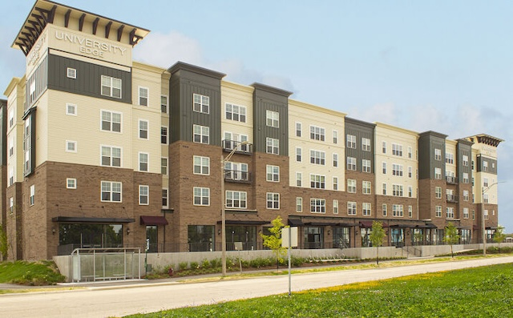
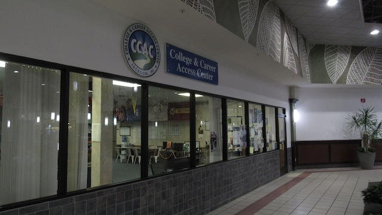
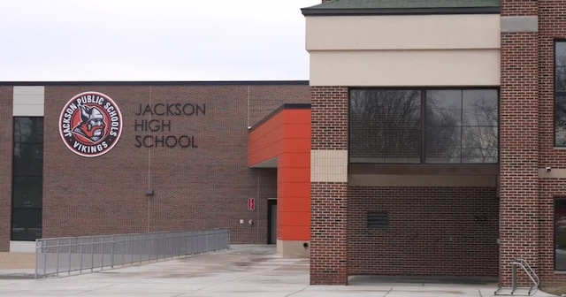
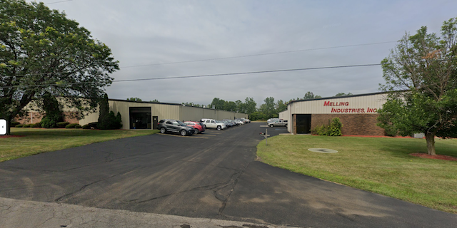
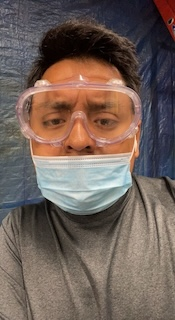
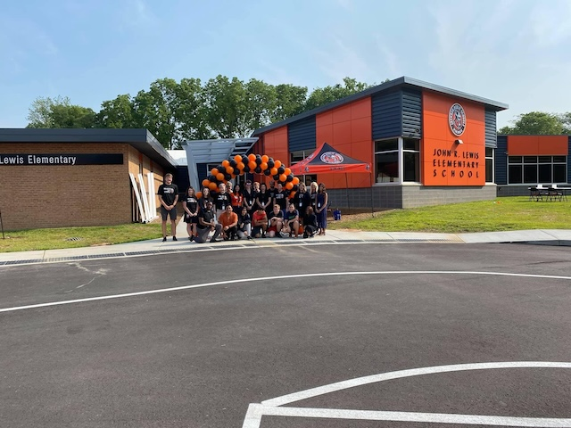
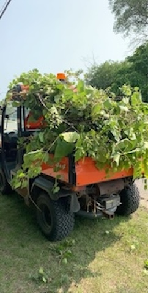
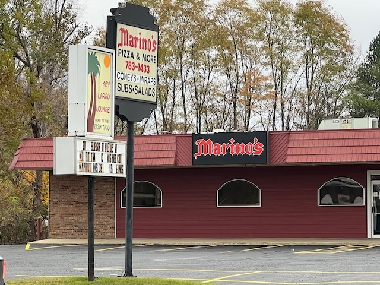
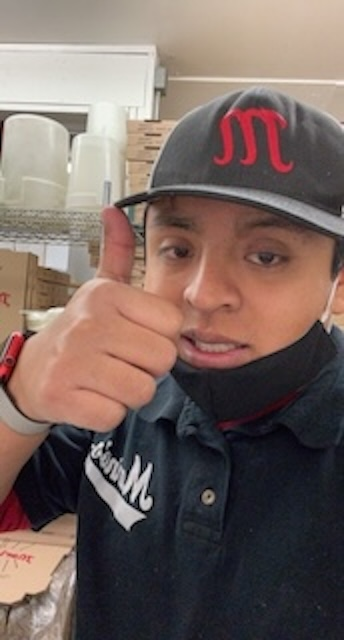

University Edge Student Living, Lansing, MI
Leasing Consultant June 2023 - Present
University Edge
In this position, I work as a leasing agent where my main task is to sell leases to all qualifying prospects to hit 100% at University Edge. To achieve this, I tour the potential primary resident along with their friends and family by showing them our amenity spaces, the property, and most importantly our model unit where they are able to see what it would look like if they lived there. I share my knowledge of property rates, initial, and monthly fees to help them get a good idea what they will be spending for the leasing term. I am able to answer any questions about the application process, co-signer responsibilities, move-in dates, pet policy, utilities, and any other general questions they may have about their lease. I also work with current residents with questions they may have about renewing their lease, ledger/payments, parking, packages and other general questions they might have throughout the year by phone call or walk-ins. I also perform market surveys to see what the prices are for our competitors around the East Lansing area.


College and Career Access Center, Jackson, MI
IMPACT Advisor June 2023 - August 2023
College & Career Access Center
Work CCAC: In this position, my main goal was to reach out to students who graduated highschool in the years 2020, 2021, and 2022 in the Jackson county area made up of 13 schools to see if their post secondary plans are still on track after the COVID-19 pandemic. The CCAC has documentation of these students' plans during their senior year and I was a near peer contact to see and help them connect with an advisor with any post-secondary assistance they may need. I also collaborated with other IMPACT advisors to quantify data based on seniors' input on what to expect for post-secondary life. Lastly, I worked with the team of advisors to plan and organize community and organization events around Jackson county.
.

Jackson Public Schools, Jackson, MI
Advance Placement Proctor May 2022 - June 2023
Jackson Public Schools
In this position, I was an Advanced Placement proctor where I overlooked students freshman-senior year taking their spring AP exams. These exams included AP U.S. History, Macroeconomics, English Language and Composition, Biology, and Psychology. I carefully read College Board's Policies and Guidelines to make sure each student fully understood what they needed to do during testing time as well as the rules they must follow. I monitored and time kept each exam session as well as collecting and securing sensitive exam material.

Melling Engine Parts, Jackson, MI
Line Worker May 2022 - August 2022
Melling Engine Parts
In this position, I worked on several different assembly/production lines where I inspected different engine parts including High Volume and Pressure Oil Pumps, and MWP-500. I collaborated with a small team to effectively put small components together to create the final product and analyzed the final product for any production errors before customer receival. I was knowledgeable about the use of each part and how many were required to be made per day or week to fill production orders, and to achieve this I had to efficiently make these parts.


Jackson Public Schools, Jackson, MI
Maintenance Crew May 2020 - May 2022
Jackson Public Schools
In this position, I was a part of a small maintenance crew for Jackson Public Schools district made up of 11 schools of which I managed in summer of 2021. I conducted ground work such as trimming bushes, pulling weeds, mulching, and cleaning the property of every school. I also did inside work such as moving classroom furniture around the district if a teacher was moving schools. I lead my team to prepare for a grand opening of a new elementary school by conducting trash removal and landscaping needs to make the property safe and presentable for the whole community.


Marino's Pizza, Jackson, MI
Inside Worker June 2018 - May 2022
Marino's Pizza
In this position, I worked as an inside worker where I made menu items such as pizzas, subs, salads, and appetizers. I Collaborated with a team to complete orders and maintain a safe and healthy work environment. I also effectively communicated with customers to place and possibly address any issue with their order. I was able to keep up in the fast-paced environment and effectively completed orders for customer satisfaction.

